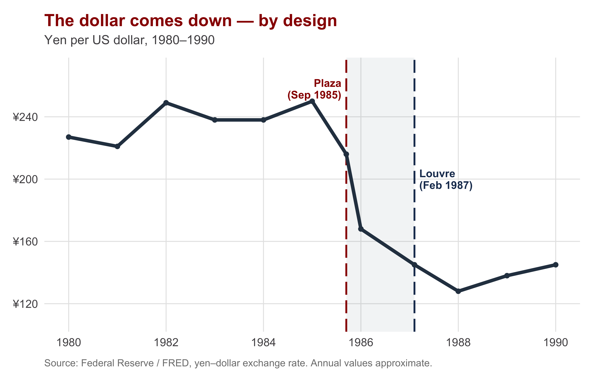
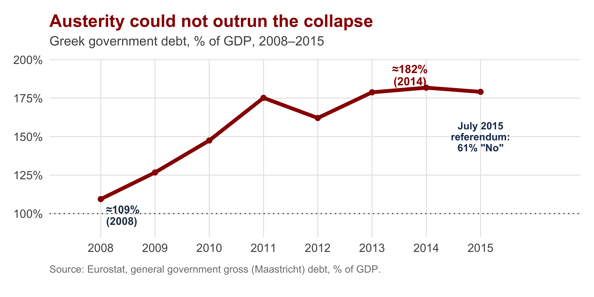
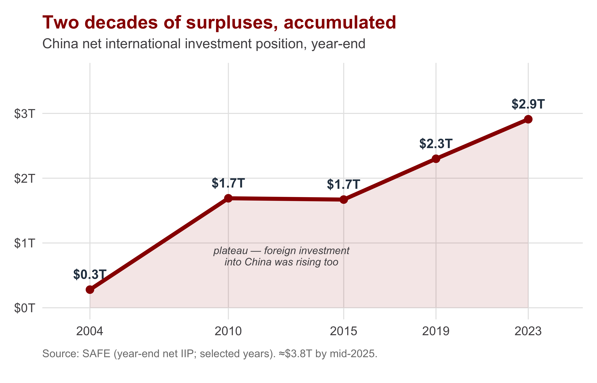

| Section | What we'll cover |
|---|---|
| 1 · The Adjustment Problem | Imbalances must close — but who is forced to change policy? |
| 2 · Why Cooperation Is Hard | A jointly beneficial system that each government is tempted to defect from |
| 3 · The Plaza and the Louvre | The G5 coordinate the dollar down (1985), then steady it (1987) |
| 4 · Europe: Union and Crisis | The EMS and the euro, then who pays for Greece's debt |
| 5 · Creditors, Debtors, and Power | China as creditor, the net investment position, and the G7-to-G20 shift |
| 6 · Cooperation, Conflict, and Crisis | Distributive conflict over adjustment is recurrent |
Cooperation, Conflict, and Crisis
INTL 503 | Chapter 11
Professor Sarah Bauerle Danzman
July 21, 2026
Today’s Plan
Today’s Big Question
A stable monetary system benefits everyone — so why is international monetary cooperation so fragile, and why does it so often break down?
Recap: Yesterday’s Mechanics, Today’s Politics
Yesterday, in brief: the current account and the financial account must balance — that’s the accounting identity. The automatic mechanism that restores balance is exchange-rate adjustment. But we observe persistent global imbalances (U.S. deficits; Chinese, German, Japanese surpluses) — which tells us something is preventing exchange rates from adjusting.
Today: how do governments try to cooperate and coordinate around these imbalances? The IMF has never been an effective police force against currency manipulation — cooperation instead has been informal and episodic. We want to understand why — and get a feel for the technical mechanisms through which exchange-rate cooperation actually works.
Before We Start: A Ten-Minute Write
Writing prompt. Yesterday we saw that one country’s current-account deficit is mechanically another country’s surplus — the books must balance. But the identity does not say who has to change policy to close the gap.
Suppose the United States runs a large deficit and Germany a large surplus. Who should adjust — and why? Should the deficit country cut spending and accept slower growth, or should the surplus country spend more and accept higher inflation? How should the two countries resolve this matter?
Write for about ten minutes from yesterday’s mechanics. There is no neutral solution — every choice puts the cost on someone.
The Adjustment Problem
Section 1
Where We Left Off: Persistent Global Imbalances

Yesterday this chart was a mechanical illustration of the national income identity. Today we are addressing the political problem: the imbalance exists because excess imports must be paid for by excess financial imports, but closing the imbalance requires someone to change policy, proactively or under duress of a crisis — and countries want to push those costs off on others.
The Adjustment Problem
The balance of payments must balance. So an imbalance must eventually close. But the burden of closing it can fall either on surplus or deficit countries — and the two sides face opposite costs.
| Path | What it requires | Who bears the cost |
|---|---|---|
| Deficit country adjusts | Tighten policy: spend less, save more, raise interest rates, cut imports | Slower growth, higher unemployment, austerity at home |
| Surplus country adjusts | Loosen policy: spend more, invest more, let demand and imports rise | Higher inflation, giving up a cheap-currency export advantage |
A deficit country that runs out of reserves is forced by markets to adjust; a surplus country is under no such pressure — it can simply keep accumulating. The cost of adjustment falls hardest on whoever has the least power to refuse it.
Why Cooperation Is Hard
Section 2
A Shared Good That Each Government Is Tempted to Undermine
A stable monetary system is jointly beneficial — everyone gains from predictable exchange rates and orderly adjustment. Yet each government is tempted to push the cost of adjustment onto others.
The cooperative outcome
If every government adjusts its fair share, the system stays stable and all are better off than under disorder. This is the logic of an assurance game (a stag hunt): the best outcome requires everyone to hold to it.
The temptation to defect
Any single government can do better for itself by forcing others to adjust — devaluing to grab exports, or simply refusing to move. This is beggar-thy-neighbor: gains for one country at the direct expense of others.
Because adjustment is costly and the temptation to offload it is always present, cooperation is not self-enforcing. It holds when the shared gains are obvious and frays when costs increase.
The Adjustment Game
When adjustment is costly, two governments facing an imbalance confront a coordination problem: the best outcome is mutual adjustment, but each is tempted to make the other adjust alone.
| Country B: Adjust | Country B: Refuse | |
|---|---|---|
| Country A: Adjust | Both share the cost — stable system, all gain (✓ best joint) | | B free-rides; A bears the full cost alone |
| Country A: Refuse | A free-rides; B bears the full cost alone | | Neither adjusts — disorder & crisis (✗ worst joint |
Mutual adjustment is best for the system, but each side prefers the other to adjust alone — and mutual refusal, the worst outcome, brought down Bretton Woods. Need to find ways to incentivize adjustment.
Thinking Through Cooperation
Assurance game (Stag Hunt)
| Other: cooperate | Other: go it alone | |
|---|---|---|
| You: cooperate |
4 , 4 best — an equilibrium |
1 , 3 |
| You: go it alone | 3 , 1 |
2 , 2 safe — also an equilibrium |
Mutual cooperation is best — but only if each side trusts the other to cooperate too.
Defection game (Prisoner’s Dilemma)
| Other: cooperate | Other: defect | |
|---|---|---|
| You: cooperate |
3 , 3 efficient, but unstable |
0 , 4 |
| You: defect | 4 , 0 |
1 , 1 Nash equilibrium |
Defecting pays no matter what the other does — so cooperation breaks down.
Let’s use simple cooperative-dilemma games to assess why the Plaza and Louvre Accords temporarily worked — and why a more permanent solution was not viable.
Small-Group Activity: Cases of Cooperation and Conflict
Break into four groups. Each group takes one case of international monetary cooperation (or its breakdown) and works through it using the upcoming slides as your reference material.
- Group 1 — The Plaza Accord (1985): What was the underlying conflict? What cooperative mechanism was used? Why did it work?
- Group 2 — The Louvre Accord & Target Zones (1987): Same questions, plus: why couldn’t this cooperation be made permanent?
- Group 3 — EMU / the EMS (Europe): What did members give up, per the trilemma? Who bore the burden of holding the system together?
- Group 4 — The Greek Debt Crisis: Who bore the cost of adjustment, and why couldn’t Greece do what a normal country in its position could?
Discuss for about 10 minutes. Each group should be ready to report back: (1) what was the distributive conflict, (2) what cooperative mechanism was attempted, (3) did it work — and why or why not?
The Plaza and the Louvre
Section 3 · Cooperation that worked, partly
The 1980s: A Soaring Dollar and a Familiar Conflict
After 1980 the United States ran the largest deficits in the world economy; Japan and Germany ran the offsetting surpluses. The cause was divergent macroeconomic policy:
- The U.S. (Reagan): tax cuts + military spending → big budget deficits, strong demand, rising imports
- Germany and Japan: fiscal consolidation and tight money → restraint, large surpluses
- High U.S. interest rates pulled in capital → the dollar appreciated ~50% (1980–85), widening the deficit further
The same adjustment fight as Bretton Woods: the U.S. wanted surplus countries to expand; Germany and Japan wanted the U.S. to cut its budget deficit. Each pointed at the other.
The soaring dollar fed a wave of protectionism in Congress — a Senate bill linking Japanese auto access passed 92–0. Trade pressure is what finally pushed the U.S. toward an international solution.
Sound familiar?
The Plaza Accord (September 1985)
Plaza Accord. A September 1985 agreement among the G5 finance ministers — the United States, Japan, West Germany, the United Kingdom, and France — to coordinate intervention in foreign-exchange markets to bring the overvalued dollar down against the yen and the mark.
- Named for the Plaza Hotel, New York, where the G5 met on September 22, 1985
- Goal: drive the dollar down 10–12% against the yen and mark in an orderly, coordinated way
- $18 billion in intervention pledged: the U.S., Germany, and Japan each 25%, Britain and France the rest
- The dollar fell sharply — about 40% from its peak over the next 15 months

The Louvre Accord and the Target-Zone Idea (1987)
Louvre Accord. A February 1987 agreement in Paris in which the G6 — the Plaza Five plus Canada (Italy was invited but declined) — judged the dollar had fallen far enough and agreed to act to stabilize exchange rates around then-current values.
By early 1987 the dollar had fallen ~40% from its peak. Plaza had succeeded — perhaps too well. The Louvre tried to halt the slide and hold rates steady.
Target Zone. A proposed system in which each currency would have a central value surrounded by wide margins (e.g., ±10%); governments would intervene only when a rate threatened to move outside the band.
The target-zone idea would have made cooperation permanent and institutional. It required continuous policy coordination — and failed to attract support.
Cooperation that worked episodically (Plaza, Louvre) could not be made permanent. Why? The Louvre commitments unraveled within months — the U.S. wanted Germany to cut interest rates, the Bundesbank raised them, and the public spat helped trigger the October 1987 market crash.
Europe: Union and Crisis
Section 4 · The most ambitious cooperation
From the EMS to Monetary Union
European Monetary System (EMS). A fixed-but-adjustable exchange-rate system begun in 1979: EU currencies held a central parity against a common basket, kept within ±2.25% of their bilateral rates.
- In practice the EMS revolved around German monetary policy — others pegged to the mark and imported Bundesbank low inflation
- The burden of maintaining the pegs fell on the high-inflation countries, not on Germany
Monetary Union. Members abolish their national currencies and adopt a single currency (the euro, 1999) governed by one central bank (the ECB).
- Driven by dissatisfaction with German dominance of the EMS and the push to complete the single market
- Cemented politically by German reunification (1989–90): France conditioned support on monetary union
Recall the trilemma: by fixing rates (EMS) and then sharing one currency (union), members surrendered national monetary autonomy. Greece and Germany now share one monetary policy that neither controls alone.
The Greek Debt Crisis: Who Bears the Cost?
In a monetary union, a member in trouble cannot devalue its own currency. When Greece could no longer service its debt, the only question left was distributive: who pays?
- Greek citizens, through austerity — spending cuts and tax rises to service the debt?
- Northern creditors (German, French banks; later taxpayers), through default or write-downs?
- The troika — ECB, European Commission, IMF — made loans conditional on austerity
- Germany bargained hard: easy terms for Greece would signal Italy, Spain, Portugal to expect the same

Greek GDP fell ~45% (2008–2011) and unemployment peaked near 27% (2013). Debt rose as a share of a shrinking economy (because denominator plummeted.
July 2015: The Referendum and the Limits of “No”
In July 2015 the Syriza government put the troika’s new austerity package to a national referendum. About 61% voted “No.”
- Prime Minister Tsipras hoped a resounding “No” would strengthen his hand with the troika
- But Greece had already defaulted to the IMF; banks were closed; capital controls were imposed
- With conditions worsening, Tsipras ultimately accepted terms even harsher than the ones voters had rejected
The deeper political question: is monetary union viable if a member cannot devalue and the costs of stability fall so unevenly?
“Óxi” (“No”) rally, July 2015 — “Austerity: Game Over”
Report Back: What Did Each Case Teach Us?
Each group reports back — 2 to 3 minutes.
- Group 1 (Plaza): the conflict, the mechanism, the outcome
- Group 2 (Louvre): the conflict, the mechanism, the outcome — and why it couldn’t last
- Group 3 (EMU): what was surrendered, and who bore the cost inside the EMS
- Group 4 (Greece): who bore the cost, and why Greece couldn’t devalue its way out
Across all four cases: cooperation is real, but it is informal, episodic, and fragile — the same distributive conflict resurfaces even under the deepest integration (the euro).
Creditors, Debtors, and Power
Section 5 · The contemporary system
China as Creditor: The International Investment Position
International Investment Position (IIP). A country’s total external assets minus its total external liabilities — its net financial claims on (or debts to) the rest of the world. A creditor country owns more abroad than foreigners own of it; a debtor country, the reverse.

China’s foreign assets composition (end-2023)
| Asset type | Stock | Share |
|---|---|---|
| Reserve assets (FX, gold) | $3.45T | 36% |
| Direct investment abroad | $2.93T | 31% |
| Other (loans, deposits, trade credit) | $2.09T | 22% |
| Portfolio investment | $1.10T | 11% |
Total external assets $9.58T; net position +$2.91T. More than a third sits in low-yield official reserves — largely U.S. Treasuries — not higher-return investments abroad.
Does Lending Confer Power — or Does Borrowing?
The contemporary system puts the adjustment problem between a great creditor (China) and a great debtor (the United States). It is not obvious which position is the stronger one.
| Position | The case for power | The counterargument |
|---|---|---|
| Creditor power (China) | Owning the claims, holding the reserves, financing the deficits — leverage over the borrower | A creditor that needs the debtor's market to keep buying — and to keep paying — is also exposed |
| Debtor / reserve power (US) | Borrowing in your own currency that everyone must hold; the dollar's reserve status lets the U.S. delay adjustment | "Exorbitant privilege" is real, but persistent deficits build a deep negative position and provoke conflict |
Whoever is forced to adjust is the weaker party. The dollar’s reserve-currency status lets the U.S. postpone adjustment in a way Greece never could — because demand for USD remains high.
Where Coordination Happens Now: From the G7 to the G20
As China and other emerging economies became central to global imbalances, the locus of coordination shifted.
- Through the 1980s–90s, the major economies coordinated in the G7 (the Plaza/Louvre club)
- The G20 existed from 1999 as a finance-ministers’ forum, but was secondary
- In the 2008 crisis, leaders elevated the G20 to the summit level — the main arena for crisis response and macro coordination
The shift had two potential explanations: that emerging economies had simply become too important to leave out — or that the G7 wanted China inside the room to dilute its own obligations and share the adjustment burden.
Either way: coordination remains informal. There is still no formal institution that governs currency manipulation or compels a surplus country to adjust.
Cooperation, Conflict, and Crisis
Section 6 · The argument, and your turn
Discussion: Who Should Adjust?
Pull out what you wrote at the start — your case for who should adjust. Now that we have the chapter, let’s refine it.
Questions to review:
- Did you argue the deficit or the surplus country should adjust? Did your view change? Why?
- Where does your argument put the cost — on which country’s citizens?
- The U.S. delays adjustment that Greece could not. Is that fair, or just a fact of power?
(When and How) Can we get cooperation?:
Distributive conflict over who bears the cost of adjustment is endemic to international monetary systems — a structural feature, not a defect of particular governments. Cooperation is informal, partial, and fragile.
There is no settled right answer to “who should adjust.” That is precisely Oatley’s point — and why this conflict recurs across the gold standard, Bretton Woods, the Plaza, the eurozone, and the U.S.–China relationship.
🎧 This week’s podcast — Trade Talks #104 (Gagnon & Obstfeld): a strong dollar and currencies held down abroad — should the U.S. answer with countervailing tariffs or counter-intervention? The modern sequel to the Plaza fight.
Recap: Why Cooperation Is Fragile
Today’s Big Question — A stable monetary system benefits everyone — so why is international monetary cooperation so fragile, and why does it so often break down?
The problem
- An imbalance must close, but the burden falls on either side — that’s the adjustment problem
- A stable system is a shared good, yet each government is tempted to push the cost onto others (beggar-thy-neighbor)
- The party with the least power to refuse is the one forced to adjust
The cases
- Plaza (1985) & Louvre (1987): cooperation worked — but target zones failed; it couldn’t be made permanent
- EMS → euro: the deepest cooperation; the Greek crisis showed it only relocated the conflict
- China & the U.S.: creditor vs. reserve-currency debtor; coordination shifted G7 → G20, still informal
Oatley’s thesis: distributive conflict over adjustment is endemic to monetary systems — not a defect of governments. Cooperation is real, but informal, partial, and fragile. Next: who at home wants a strong vs. a weak currency — the society-centered politics of Ch. 12.

INTL 503 | Cooperation, Conflict, and Crisis in the International Monetary System